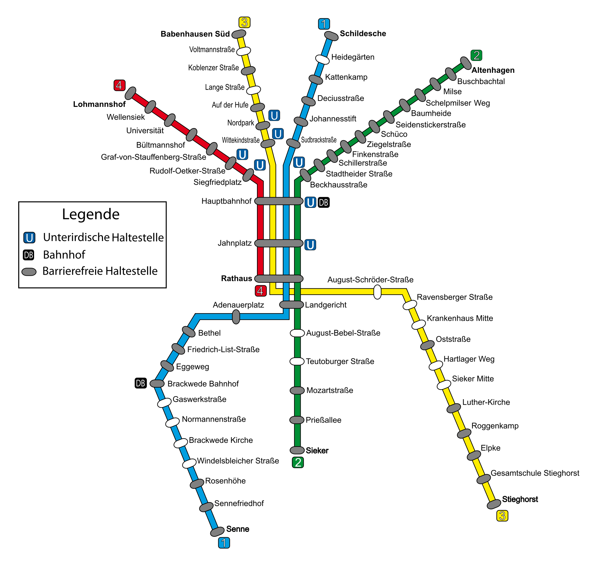

Finde deinen Weg durch das Bielefelder Stadtbahnnetz!
In diesem Projekt kann der Weg von einer Bielefelder Stadtbahnstation zur Nächsten abgefragt werden.
Der Lösungsweg wird mithilfe eines Backtracking-Algorithmus berechnet.
Hierzu sind die Stationen verlinkt, sodass das Netz als eine
Graphstruktur abgebildet wird. Berechnet wird der Weg auf dem dazugehörigen Server, welcher mittels Node/Express erstellt wurde.
Achtung: Die Station Innenstadt bildet die Stationen Hauptbahnhof, Jahnplatz, Rathaus und Landgericht zusammen ab.
